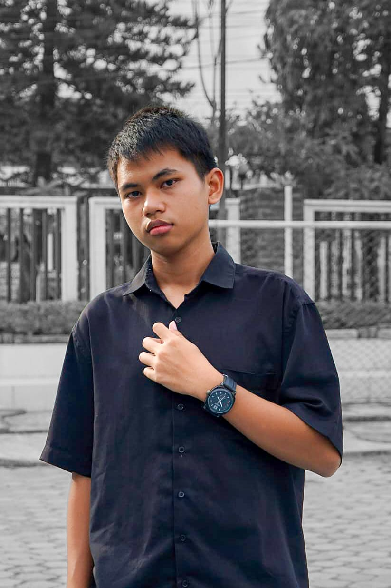

Tech enthusiast · Programmer
Building intelligent systems — one workflow at a time.

Hei! Nama saya Farrel — seorang mahasiswa baru yang sedang membangun jalan menuju dunia AI Engineering & Automation.
berdomisili di Bojonegoro dan tengah mempersiapkan diri untuk masuk ke progam studi informatika UPN "VETERAN" JAWA TIMUR — sambil aktif membangun skill freelance di bidang AI automation.
Passion saya ada di persimpangan antara kecerdasan buatan, otomasi workflow,pemograman, dan desain sistem yang elegan. Saya percaya teknologi bisa memecahkan masalah nyata yang belum bisa terpecahkan sebelumnya.
Selain di bidang teknik,saya juga mampu mengemudikan drone,terutama kebutuhan dokumentasi cinematic
View Project →Di bidang creativ,saya juga aktiv menikuti lomba visualisasi data berbasis data rill dengan tujuan meliterasi masyarakat dengan data bps
View Project →
Let's Build
Something.